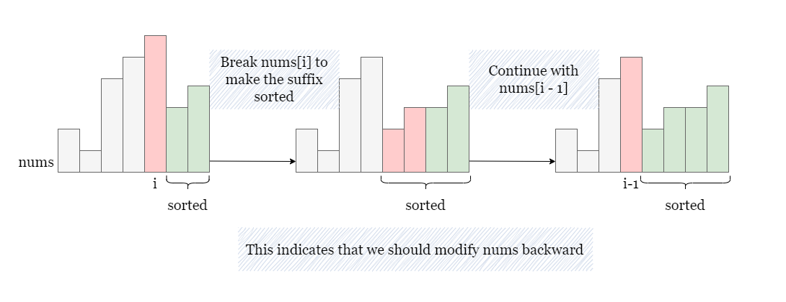
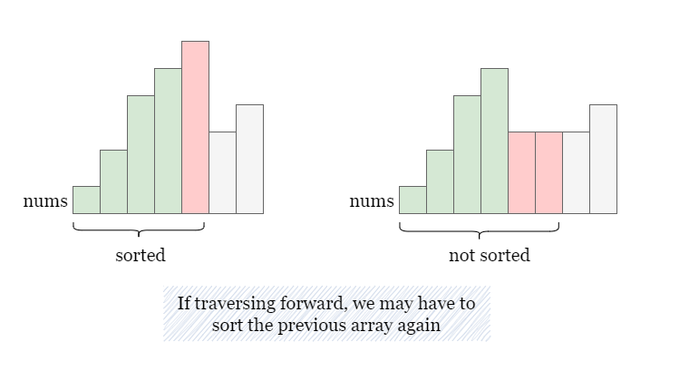
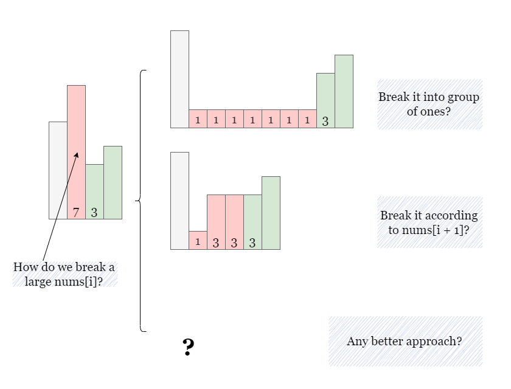
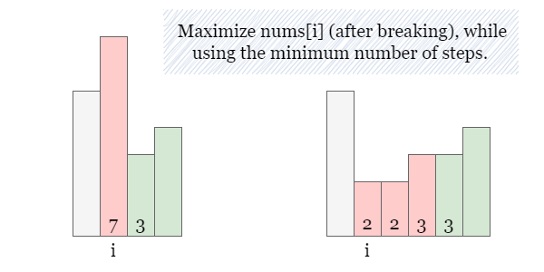
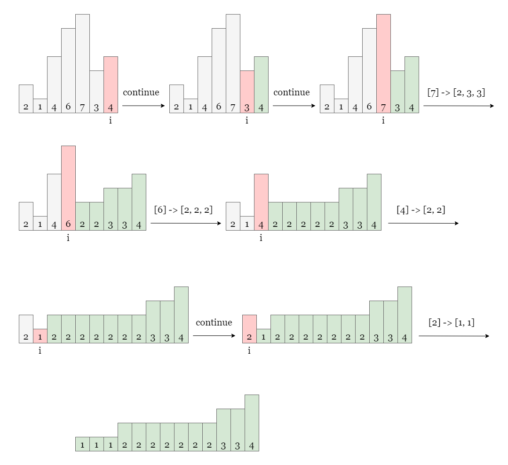

If nums is not sorted, there exists at least one adjacent pair nums[i], nums[i + 1] where
nums[i] > nums[i + 1]. How should we handle this pair of numbers that don't adhere to the sorted
order? Should we break down the larger nums[i] using replacement operations or the smaller nums[i
+ 1]? To minimize the number of steps, it is unnecessary to break down the smaller number because it
would only increase the number of replacement operations.
Now that we understand the logic for handling adjacent unsorted pairs, the next question is the order in which we
process nums. Here, we need to traverse in reverse order. The reason is that our
replacement operations will only make the current nums[i] become two (or more) smaller numbers.
If we start from the end and move toward the beginning, we can ensure that the suffix array always remains sorted.
This is because we are replacing nums[i] with smaller elements, which will not disrupt the sorting
structure of the suffix array (elements at indices i + 1, i + 2, etc. that are already sorted).

On the contrary, if we start from the beginning and replace a larger element with smaller elements, it may disrupt the sorted order of the previously processed elements on the left, and we'll end up needing more operations to sort the processed subarray again, as shown in the picture below.

Now that we know the traversal order, the next step is to minimize the number of operations. When we reach nums[i]
during the reverse traversal, if nums[i] > nums[i + 1], how many smaller numbers should we break
nums[i] into? Here are a few options:
nums[i] into many 1s, which would require too many operations.nums[i] according to the value of nums[i + 1], with the remainder of nums[i]
divided by nums[i + 1] becoming the new nums[i]. However, in some cases, this method
can result in a very small nums[i]. For example, [7] will be replaced by [1, 3,
3], thus all the previous elements must be replaced by 1s.

We can use a method similar to option 2:
nums[i] is divisible by nums[i + 1], we break nums[i] into multiple
elements of value nums[i + 1].
nums[i] is not divisible by nums[i + 1], we break nums[i] into (nums[i]
/ nums[i + 1] + 1) sorted elements, with the largest element being nums[i + 1] and the
smallest element being nums[i + 1] - 1. For example, if nums[i] = 7 and nums[i +
1] = 3, we replace [7] with [2, 2, 3] by two replacement operations.

The reason that [2, 2, 3] is a better split than [1, 3, 3] is that all future elements on
the left will need to be less than or equal to the elements we split into here. Thus, we would prefer the larger
2 over the smaller 1, so we have more options for future splits.
In summary, we traverse nums in reverse and break down each nums[i] that violates the
sorting order according to the approach mentioned above. We also accumulate the number of replacement operations. It
is important to note that when we break nums[i] into n elements, it actually requires
n - 1 steps.
Please refer to the picture below as a detailed example:

In the previous paragraph, we discussed two cases for calculating
num_elements, which can be simplified bynums_elements = (nums[i] + nums[i + 1] - 1) / nums[i + 1]. Regardless of whethernums[i]is divisible asnums[i + 1]or not, we will always obtain the correct result.
Set answer as 0, and set n as the length of nums.
Iterate over nums backward from nums[n - 2], as we don't need to replace nums[n
- 1].
nums[i] <= nums[i + 1], move on to the next element nums[i - 1].nums[i] is divisible by nums[i + 1], break nums[i] into nums_elements
= num[i] / nums[i + 1] elements, otherwise, break num[i] into nums_elements =
nums[i] / nums[i + 1] + 1 elements. This requires num_elements - 1 replacement
operations. Hence, we increment answer by num_elements - 1.
nums[i] after the operations is nums[i] / num_elements,
update nums[i] as nums[i] / num_elements.
Reeturn answer once the iteration is complete.
Java
class Solution {
public long minimumReplacement(int[] nums) {
long answer = 0;
int n = nums.length;
// Start from the second last element, as the last one is always sorted.
for (int i = n - 2; i >= 0; i--) {
// No need to break if they are already in order.
if (nums[i] <= nums[i + 1]) {
continue;
}
// Count how many elements are made from breaking nums[i].
long numElements = (long)(nums[i] + nums[i + 1] - 1) / (long)nums[i + 1];
// It requires numElements - 1 replacement operations.
answer += numElements - 1;
// Maximize nums[i] after replacement.
nums[i] = nums[i] / (int)numElements;
}
return answer;
}
}
C++
class Solution {
public:
long long minimumReplacement(vector& nums) {
long long answer = 0;
int n = nums.size();
// Start from the second last element, as the last one is always sorted.
for (int i = n - 2; i >= 0; i--) {
// No need to break if they are already in order.
if (nums[i] <= nums[i + 1]) {
continue;
}
// Count how many elements are made from breaking nums[i].
long long numElements = ceil((nums[i] + nums[i + 1] - 1LL) / (nums[i + 1]));
// It requires numElements - 1 replacement operations.
answer += numElements - 1;
// Maximize nums[i] after replacement.
nums[i] = nums[i] / numElements;
}
return answer;
}
};
Python3
class Solution:
def minimumReplacement(self, nums: List[int]) -> int:
answer = 0
n = len(nums)
# Start from the second last element, as the last one is always sorted.
for i in range(n - 2, -1, -1):
# No need to break if they are already in order.
if nums[i] <= nums[i + 1]:
continue
# Count how many elements are made from breaking nums[i].
num_elements = (nums[i] + nums[i + 1] - 1) // nums[i + 1]
# It requires numElements - 1 replacement operations.
answer += num_elements - 1
# Maximize nums[i] after replacement.
nums[i] = nums[i] // num_elements
return answer
Let nn
be the size of nums.
Time complexity: O(n)O(n)
nums once in reverse.num_elements, answer and nums[i],
which takes O(1)O(1) time.
Space complexity: O(1)O(1)
nums in place and not using any additional data structures that scale with
the size of the input.